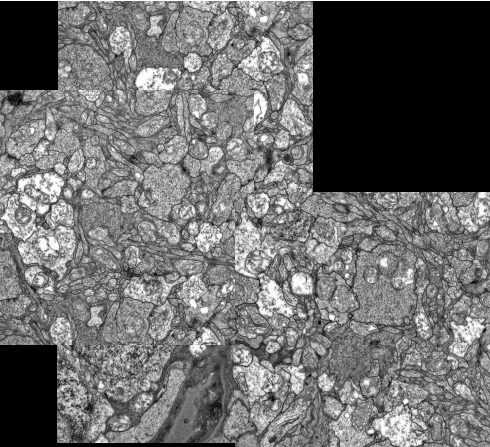

test.m Main script for the project
Input : At different stages of execution
Output : Images are displayed for each intermediate step
Details : Three main functionalities are : (a) phase correlation,
(b) peak finding and visualization and (c) mosaic building.
phasecorr.m Computes phase correlation between 2 images
Input : 2 input images, filter(optional) and peak threshold(optional)
Output : Phase correlated image, and index of peak
Details : We try 3 different types of filters: (1) Butterworth,
(2) Gaussian, and (3) Ideal / Box filter. The rest is : convolving the filter with
the power spectrum of the input images, shifting for FFT and inverse FFT. The maximum
peak in many cases is just a point. Therefore, I threshold using the histogram and do connected
component analysis for better visualization.
buildMosaic.m Mosaic construction given a list of images.
Input : Cell array of filenames involved and peak threshold.
Output : Required mosaic
Details : First, I build an adjacency matrix that denotes whether two images
are overlapped. Also, the peak value indices denote the shifts(only translation) between the images.
I place the first image on canvas. Then I loop across all the other images, for each of them I find an
image, already placed on canvas. If no such image is found, I discard the current image. If such an image
is found, then the current image is translated onto the canvas and the local offsets are recomputed.
RESULT
Phase Correlation
1) First I experiment on two sample images from
here. Results are as follows:
original Image(I)
original Image(J)
phase image(butterworth, order = 1)
binary threshold image
connected component labeled image
2) Second, I experimented on one pair of cell images
original Image(I)
original Image(J)
phase image(butterworth, order = 1)
binary threshold image
connected component labeled image
MOSAIC CONSTRUCTION
Here, I experimented on the cell images given. Each of them used butterworth filter as low pass filter.
original Image 1
original Image 2
original Image 3
original Image 4

mosaic Image
SUMMARY
The butterworth filters proved most effective in low pass transform. In the mosaic building, I chose order of butterworth n = 2. Higher orders let a very difficult
choice of peak thresholds.